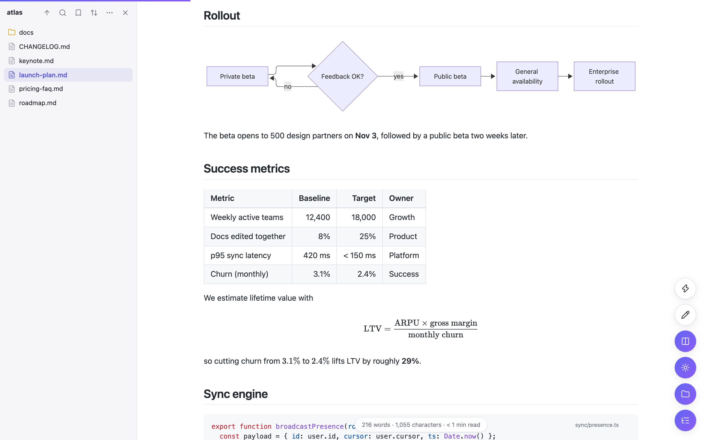

## Rendering
Diagrams, math and code that just render.
Mermaid flowcharts, Graphviz, WaveDrom and KaTeX appear inline — no build step, no copy-pasting into another tool. Open any diagram fullscreen, zoom and pan, or download it as SVG, PNG or JPEG.
- GitHub Flavored Markdown, alerts, footnotes and task lists
- 12 syntax themes, file names on code blocks, copy buttons
- Mintlify components: Cards, Tabs, Steps, Accordions, CodeGroups
